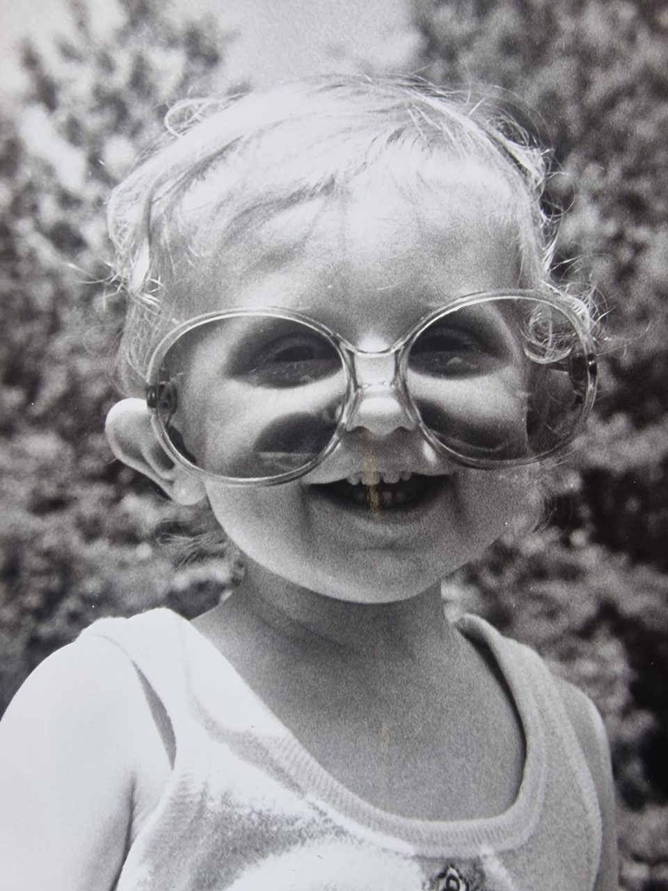
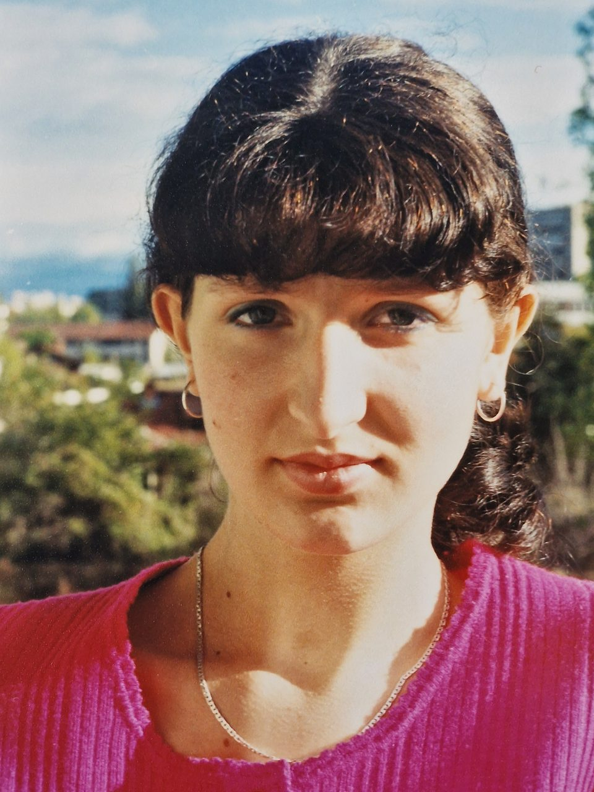
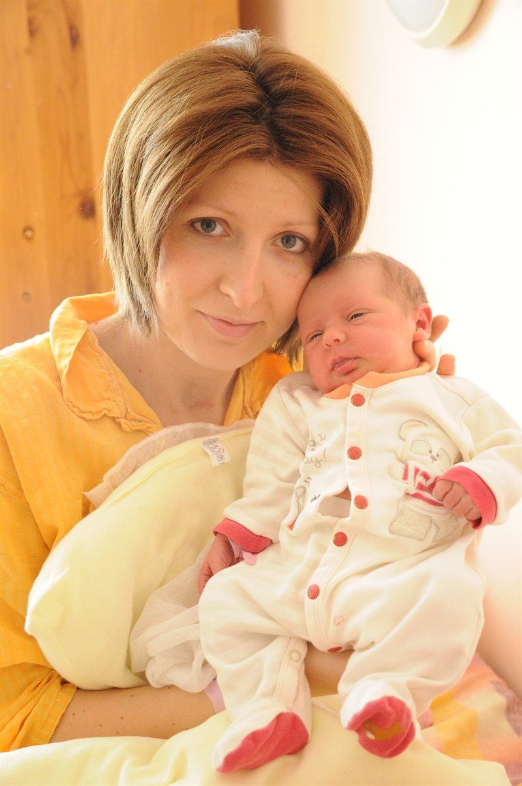
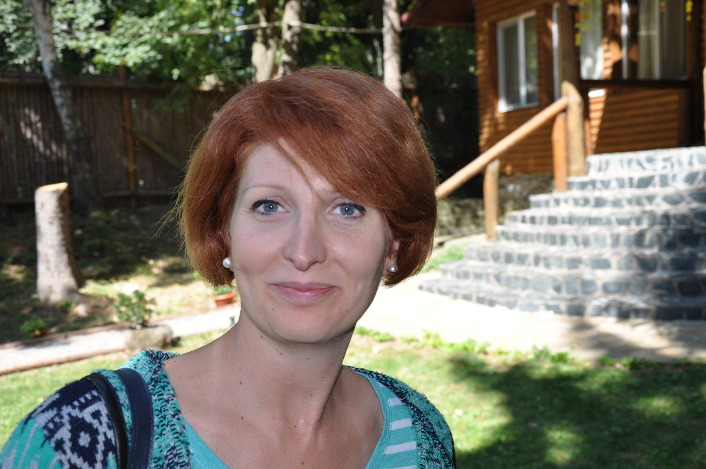
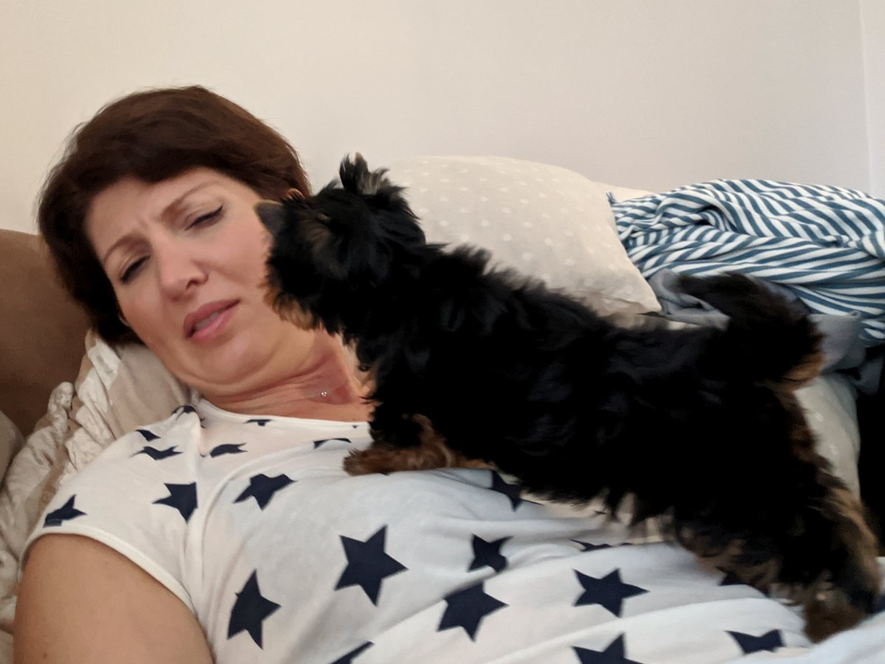
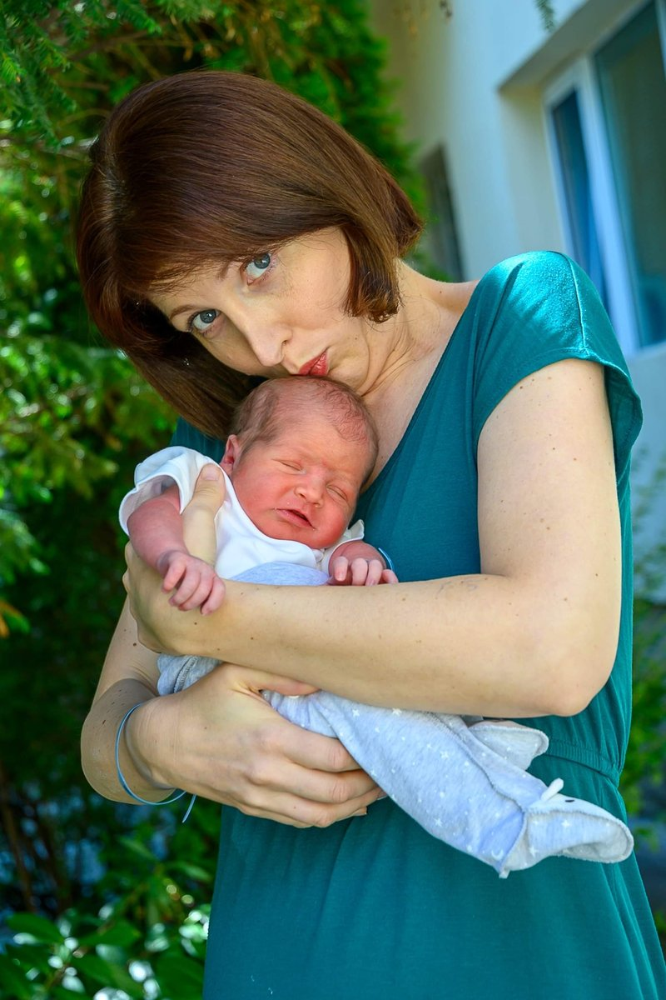

Svetla
Your name means light. Your parents could not have known how right they were. This is the story of your light, in eleven chapters.
Martin, Lea & Boyan Scroll to beginFor Svetla
This page is best in your phone's own browser. Tap ⋮ or ⋯ at the top and choose “Open in browser”.
Open in ChromeYour name means light. Your parents could not have known how right they were. This is the story of your light, in eleven chapters.
Martin, Lea & Boyan Scroll to beginNovember is the month the light runs out early. Grey mornings, short afternoons, everyone waiting for spring.
Then, on Saturday the seventh, you arrived, and your parents had the good sense to call you Svetla. Every November since has had at least one bright day in it.


First, a little girl in glasses far too big for her, grinning like she’d got away with something.
Then the glasses came off, the fringe came in, and the same eyes learned to keep a secret. We only know those girls from photos and stories. We’d have loved them both.

In the coldest part of winter, Lea arrived, and you learned about the light a mother keeps on in the hallway, just in case.
Through first steps, first days of school, first heartbreaks and every slammed door of being thirteen, that light has never once gone out.

Two strangers and one small glowing screen. I said hello. You said goodbye. I kept typing.
Then came Eledjik. I meant to play it cool. I did not manage. Seven years later, I still haven’t.


At the height of August, Boyan arrived and brought the sun indoors with him. Louder mornings. A small voice in the back seat announcing that Mama drives a “black” car. A house that never quite sleeps.
Lea became a big sister, Martin became a dad, and you made room in your heart for all of it. It wasn't easy. You made it look like it was.
Photographers say the best light comes late in the day: warmer, softer, the kind that makes everything look like a memory.
Forty-five looks exactly like that on you.
We sat down to count the reasons we love you and gave up somewhere past a thousand. Here are forty-five, one for every year. Light them one by one and see what they make.
Tap the sky to light a star and read what we love about you.
Three letters from the three people you come home to, written late at night when the house was finally quiet. Break the seals whenever you are ready.
Your light reaches far beyond our home. Some of the people it reaches couldn’t fit in our living room today, so they sent a little of it back.
One for every year, and every one of them was worth it. Close your eyes. Wish for something big. Then blow.
Your wish is granted. A trip for the two of us, anywhere in the world. You choose where. I’ll take care of everything else.